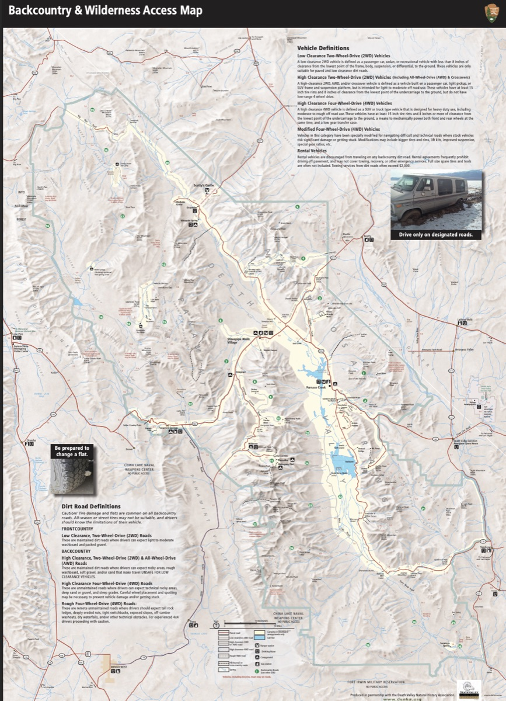
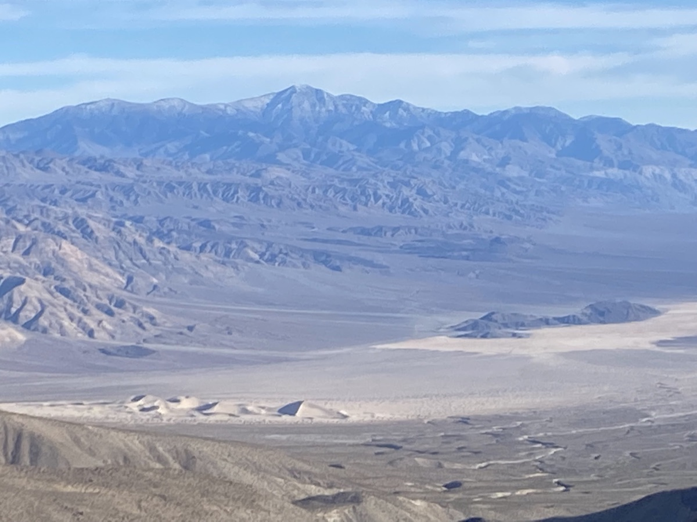
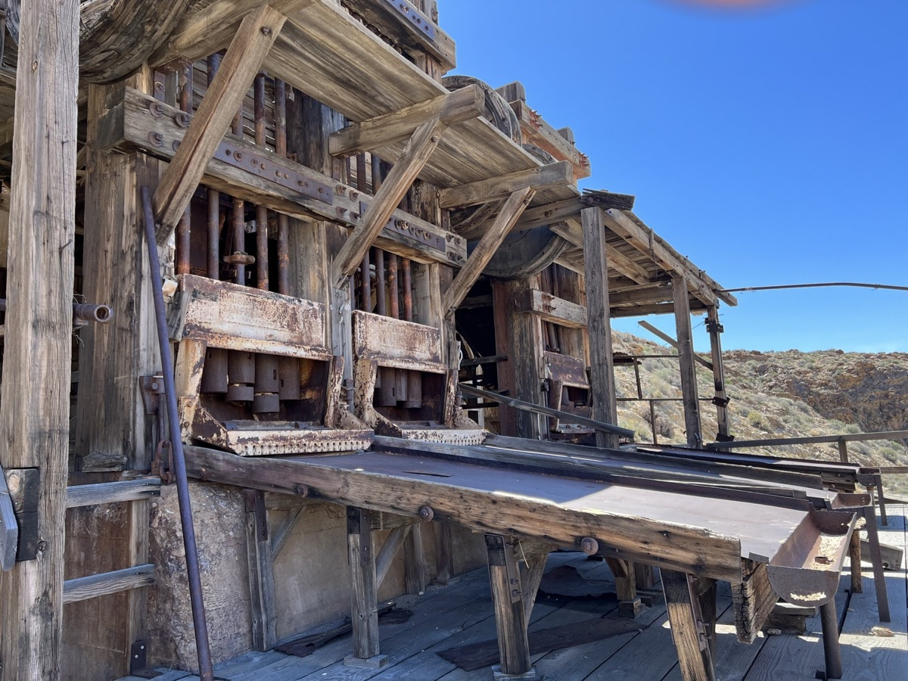
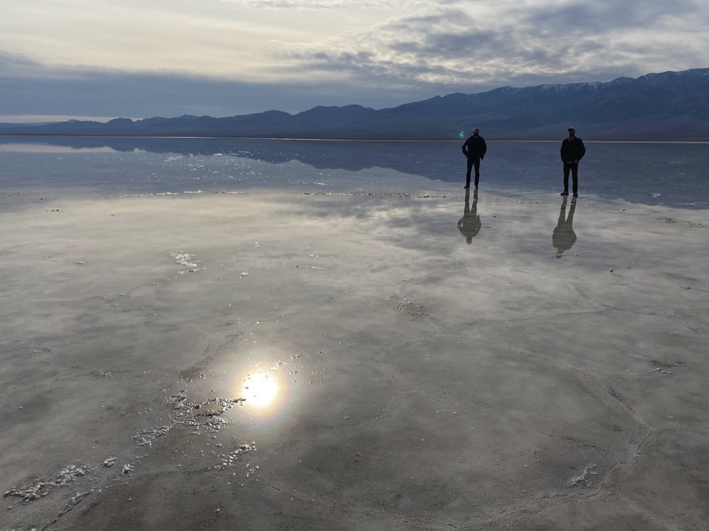
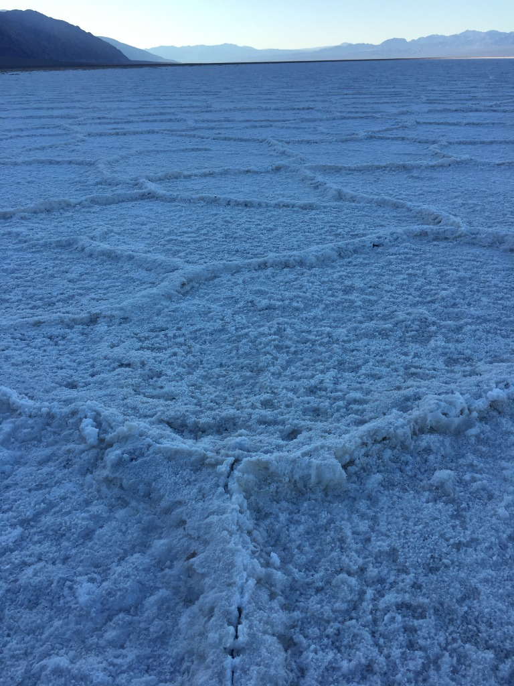
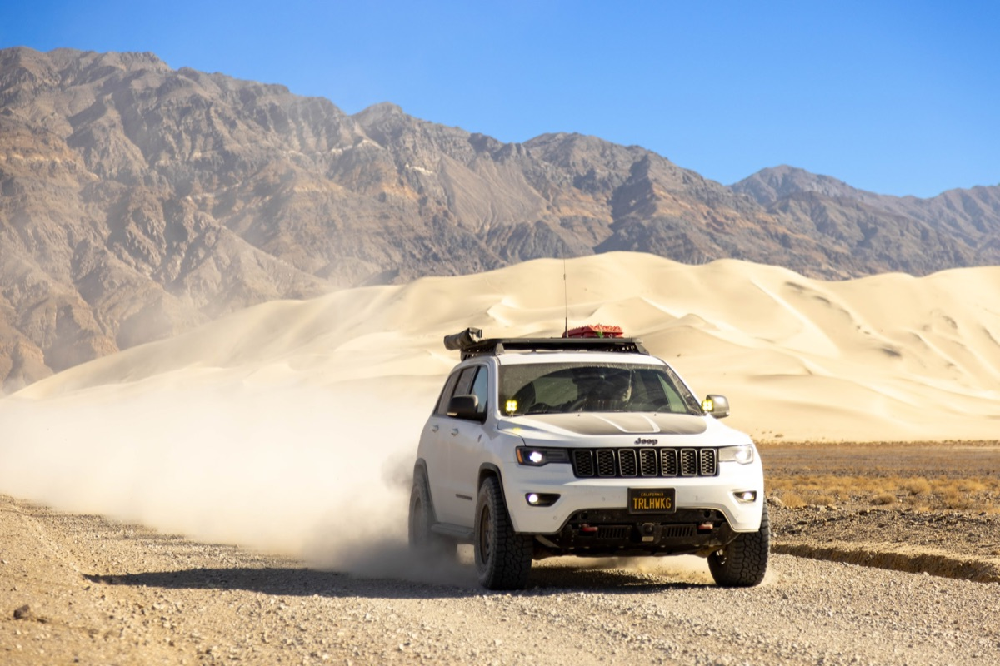

🚧 Trip Planning in Progress (Stub Page)
We are planning a spring desert trip to Death Valley National Park to meet up with the Idaho crew from Thursday, March 11 through Sunday, March 14, 2027. Trip leader, basecamp/campsite area, convoy rally point, and trail itinerary are still being finalized and will be posted here as planning progresses.
📍 Trip Information
- Trip Status: Planning
- Dates: Thursday, March 11 – Sunday, March 14, 2027
- General Area: Death Valley National Park, CA
- Trip Leader: TBD
- Basecamp / Staging: TBD
- RSVP Capacity: 0 rigs (signups not open yet)
Dates
Thursday, March 11 – Sunday, March 14, 2027
Road Conditions
Weather events can occasionally impact backcountry roads. Before departure, check the Current Road Conditions page on the NPS website for the latest status.
Trip Expectations & Terrain
Death Valley offers everything from easy scenic drives to remote backcountry routes with washboard tracks, loose rocky washes, and occasional shelf roads. Daily options will be coordinated with the Idaho crew and matched to group preferences and driver comfort. High clearance and 4WD are required for select backcountry trails; stock 4x4 and AWD vehicles are fine for main routes and scenic highlights.
Potential Exploration Options & Reference
While the final basecamp and daily itinerary with the Idaho crew are still being finalized, here are classic Death Valley routes and points of interest we may explore:
Backcountry Reference Map

Download Backcountry Map (PDF)
Western Death Valley Highlights
- Darwin Falls: A rare year-round desert oasis and flowing waterfall reached via a moderate 2-mile canyon walk.
- Father Crowley Overlook: Breathtaking viewpoint looking across Rainbow Canyon with colorful volcanic strata.
- Saline Valley & Hot Springs: Expansive wilderness valley accessible via technical passes, rewarding travelers with remote desert beauty.
- Cerro Gordo: Historic silver mining ghost town situated high in the Inyo Mountains with panoramic valley vistas.
- Panamint Dunes: Isolated desert sand dunes in northern Panamint Valley, offering peaceful desert solitude.
- Brigg's Cabin (35.99574, -117.16303): Well-known historic backcountry cabin tucked in the Panamint Range.
- Trona Pinnacles: Over 500 dramatic tufa spires rising from Searles Lake basin. Visit BLM site

Wildrose & Emigrant Canyon Area
- Charcoal Kilns & Wildrose Peak: Ten remarkably preserved 1870s beehive kilns built for silver smelters.
- Eureka Mine & Aguereberry Point: Historic mining works and an awe-inspiring viewpoint across Death Valley from 6,433 feet.
- Skidoo Stamp Mill: Remains of a 1900s-era gold milling operation reached via scenic backcountry trails.

Classic Death Valley Attractions
- Mesquite Flat Sand Dunes: Expansive rippling dunes, perfect for sunrise or sunset photography.
- Badwater Basin: North America's lowest elevation at 282 feet below sea level, surrounded by vast salt polygon crusts.
- Keane Wonder Mine: Historic tramway and stamp mill ruins perched against the Funeral Mountains.
- Chloride Cliff: Mineral-tinted canyon views overlooking the valley toward Nevada.


Northern Death Valley Adventures
- Ubehebe Crater: Massive 600-foot volcanic explosion crater with a walkable rim trail.
- The Racetrack: Legendary dry lakebed famous for sailing stones (Teakettle Junction, Hunter Mountain Road, or technical Lippincott Mine Road).
- Titus Canyon: Iconic one-way canyon route featuring towering canyon walls, petroglyphs, and Leadfield ghost town (subject to NPS opening status).

Fire Restrictions & Permits
Current as of November 16, 2026
Fire Restrictions: Death Valley National Park and surrounding BLM lands enforce strict fire regulations. Inside the national park, campfires and charcoal are limited to provided metal fire rings at established campgrounds; wood collecting is prohibited park-wide.
Permits: A free California Campfire Permit is required for operating portable gas or propane stoves and lanterns on surrounding BLM lands and backcountry routes.
Obtain Campfire PermitGet Ready Before We Go
🛑 SAFETY REQUIREMENTS
Rear Amber Chase Light and HAM Radio communications are REQUIRED to travel with the group.
Why Amber Chase Lights?
Dusty trails are common – amber lights penetrate dust far better than white or red, helping prevent rear-end collisions in low visibility. Learn more about Why Chase Lights?
HAM Radio
Program to 146.460 MHz (simplex). Handhelds work great even without a license for listening.
If you don't have a ham radio yet, check out our guide to get started.
Other Essentials
- Offline navigation (download GPX / OnX / Gaia maps – no cell coverage in backcountry)
- Extra fuel and drinking water (3–5 gallons extra water per vehicle recommended)
- Off-road tires, full-size spare, recovery gear, and tire inflator
- Layered camp gear for cool spring desert nights
Group Trip Agreement & Waiver
Before signing up, please review the Voluntary Acknowledgment of Risk and Group Trip Agreement. By RSVP'ing and participating in this trip, you certify that you have read, understood, and voluntarily agreed to these terms.